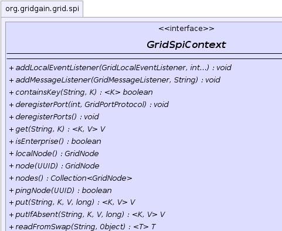
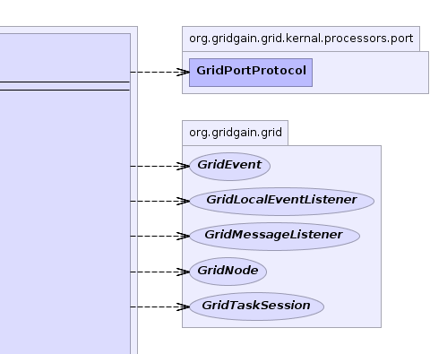
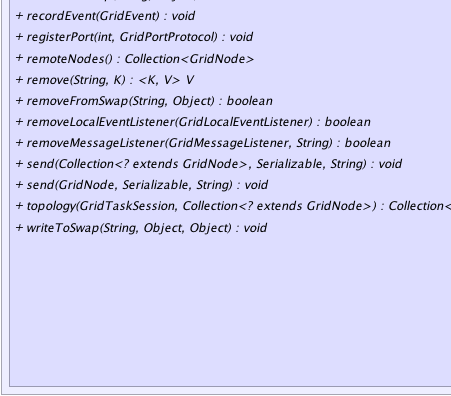
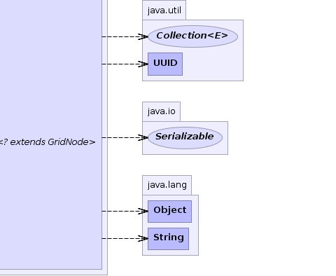

|
|

|
|

|

|

|
GridGain™ 3.1.1c
Community Edition |
|||||||||
| PREV CLASS NEXT CLASS | FRAMES NO FRAMES | |||||||||
| SUMMARY: NESTED | FIELD | CONSTR | METHOD | DETAIL: FIELD | CONSTR | METHOD | |||||||||
public interface GridSpiContext
SPI context provides common functionality for all SPI implementations.
| Wiki | |
| Forum |
|  |  |
|  |  |
| Method Summary | ||
|---|---|---|
void |
addLocalEventListener(GridLocalEventListener lsnr,
int... types)
Adds an event listener for local events. |
|
void |
addMessageListener(GridMessageListener lsnr,
String topic)
Register a message listener to receive messages sent by remote nodes. |
|
|
containsKey(String cacheName,
K key)
Returns true if this cache contains a mapping for the specified key. |
|
void |
deregisterPort(int port,
org.gridgain.grid.kernal.processors.port.GridPortProtocol proto)
Deregisters closed port. |
|
void |
deregisterPorts()
Deregisters all closed ports. |
|
|
get(String cacheName,
K key)
Gets object from cache. |
|
boolean |
isEnterprise()
Tests whether or not this GridGain runtime runs on an enterprise edition. |
|
GridNode |
localNode()
Gets local grid node. |
|
GridNode |
node(UUID nodeId)
Gets a node instance based on its ID. |
|
Collection<GridNode> |
nodes()
Gets a collection of all grid nodes. |
|
boolean |
pingNode(UUID nodeId)
Pings a remote node. |
|
|
put(String cacheName,
K key,
V val,
long ttl)
Puts object in cache. |
|
|
putIfAbsent(String cacheName,
K key,
V val,
long ttl)
Puts object into cache if there was no previous object associated with given key. |
|
|
readFromSwap(String spaceName,
Object key)
Reads object from swap. |
|
void |
recordEvent(GridEvent evt)
Records local event. |
|
void |
registerPort(int port,
org.gridgain.grid.kernal.processors.port.GridPortProtocol proto)
Registers open port. |
|
Collection<GridNode> |
remoteNodes()
Gets a collection of remote grid nodes. |
|
|
remove(String cacheName,
K key)
Removes object from cache. |
|
boolean |
removeFromSwap(String spaceName,
Object key)
Removes object from swap. |
|
boolean |
removeLocalEventListener(GridLocalEventListener lsnr)
Removes local event listener. |
|
boolean |
removeMessageListener(GridMessageListener lsnr,
String topic)
Removes a previously registered message listener. |
|
void |
send(Collection<? extends GridNode> nodes,
Serializable msg,
String topic)
Sends a message to a group of remote nodes. |
|
void |
send(GridNode node,
Serializable msg,
String topic)
Sends a message to a remote node. |
|
Collection<? extends GridNode> |
topology(GridTaskSession taskSes,
Collection<? extends GridNode> grid)
Obtain grid node topology for a given task. |
|
void |
writeToSwap(String spaceName,
Object key,
Object val)
Writes object to swap. |
|
| Method Detail |
|---|
Collection<GridNode> remoteNodes()
GridDiscoverySpi implementation used. Unlike GridSpiContext.nodes(),
this method does not include local grid node.
GridSpiContext.localNode(),
GridSpiContext.nodes(),
GridDiscoverySpiCollection<GridNode> nodes()
GridDiscoverySpi implementation used. Unlike GridSpiContext.remoteNodes(),
this method does include local grid node.
GridSpiContext.localNode(),
GridSpiContext.remoteNodes(),
GridDiscoverySpiboolean isEnterprise()
True for enterprise edition, false - for community edition.GridEnterpriseFeatureException,
GridEnterpriseOnlyGridNode localNode()
GridDiscoverySpi
implementation used.
GridDiscoverySpi@Nullable GridNode node(UUID nodeId)
nodeId - ID of a node to get.
null is such not has not been discovered.GridDiscoverySpiboolean pingNode(UUID nodeId)
GridDiscoverySpi.pingNode(UUID) implementation.
Discovery SPIs usually have some latency in discovering failed nodes. Hence, communication to remote nodes may fail at times if an attempt was made to establish communication with a failed node. This method can be used to check if communication has failed due to node failure or due to some other reason.
nodeId - ID of a node to ping.
true if node for a given ID is alive, false otherwise.GridDiscoverySpi
void send(GridNode node,
Serializable msg,
String topic)
throws GridSpiException
GridCommunicationSpi implementation used.
GridSpiException - If failed to send a message to remote node.node - Node to send a message to.msg - Message to send.topic - Topic to send message to.void send(Collection<? extends GridNode> nodes, Serializable msg, String topic) throws GridSpiException
GridCommunicationSpi implementation used.
GridSpiException - If failed to send a message to any of the remote nodes.nodes - Group of nodes to send a message to.msg - Message to send.topic - Topic to send message to.
void addMessageListener(GridMessageListener lsnr,
String topic)
GridCommunicationSpi implementation used.
This method can be used by jobs to communicate with other nodes in the grid. Remote nodes
can send messages by calling GridSpiContext.send(GridNode, Serializable, String) or
GridSpiContext.send(Collection, Serializable, String) methods.
lsnr - Message listener to register.topic - Topic to register listener for.
boolean removeMessageListener(GridMessageListener lsnr,
String topic)
lsnr - Message listener to remove.topic - Topic to unregister listener for.
true of message listener was removed, false if it was not
previously registered.
void addLocalEventListener(GridLocalEventListener lsnr,
int... types)
lsnr - Event listener for local events.types - Optional types for which this listener will be notified. If no types are provided
this listener will be notified for all local events.GridEventboolean removeLocalEventListener(GridLocalEventListener lsnr)
lsnr - Local event listener to remove.
true if listener was removed, false otherwise.Collection<? extends GridNode> topology(GridTaskSession taskSes, Collection<? extends GridNode> grid) throws GridSpiException
GridSpiException - If failed to get topology.taskSes - Task session.grid - Available grid nodes.
void recordEvent(GridEvent evt)
evt - Local grid event to record.
void registerPort(int port,
org.gridgain.grid.kernal.processors.port.GridPortProtocol proto)
port - Port.proto - Protocol.
void deregisterPort(int port,
org.gridgain.grid.kernal.processors.port.GridPortProtocol proto)
port - Port.proto - Protocol.void deregisterPorts()
@Nullable <K,V> V get(String cacheName, K key) throws GridException
GridException - Thrown if any exception occurs.cacheName - Cache name.key - Object key.
@Nullable <K,V> V put(String cacheName, K key, V val, long ttl) throws GridException
GridException - Thrown if any exception occurs.K - Key type.V - Value type.cacheName - Cache name.key - Object key.val - Cached object.ttl - Time to live, 0 means the entry will never expire.
null.@Nullable <K,V> V putIfAbsent(String cacheName, K key, V val, long ttl) throws GridException
GridException - If put failed.K - Cache key type.V - Cache value type.cacheName - Cache name.key - Cache key.val - Cache value.ttl - Time to live.
null if there was no value for given key.@Nullable <K,V> V remove(String cacheName, K key) throws GridException
GridException - Thrown if any exception occurs.K - Key type.V - Value type.cacheName - Cache name.key - Object key.
null.<K> boolean containsKey(String cacheName, K key)
true if this cache contains a mapping for the specified key.
K - Key type.cacheName - Cache name.key - Object key.
true if this cache contains a mapping for the specified key.
void writeToSwap(String spaceName,
Object key,
@Nullable
Object val)
throws GridException
GridException - If any exception occurs.spaceName - Swap space name.key - Key.val - Value.@Nullable <T> T readFromSwap(String spaceName, Object key) throws GridException
GridException - If any exception occurs.T - Value type.spaceName - Swap space name.key - Key.
boolean removeFromSwap(String spaceName,
Object key)
throws GridException
GridException - If any exception occurs.spaceName - Swap space name.key - Key.
true if value was actually removed, false otherwise.
|
GridGain™ 3.1.1c
Community Edition |
|||||||||
| PREV CLASS NEXT CLASS | FRAMES NO FRAMES | |||||||||
| SUMMARY: NESTED | FIELD | CONSTR | METHOD | DETAIL: FIELD | CONSTR | METHOD | |||||||||
|
GridGain - High Performance Cloud Computing
|
|
|
|